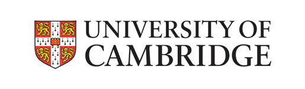
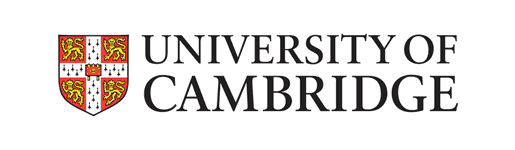
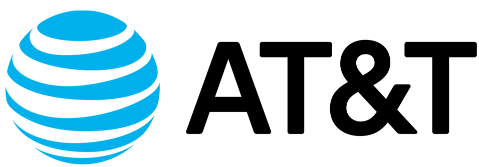
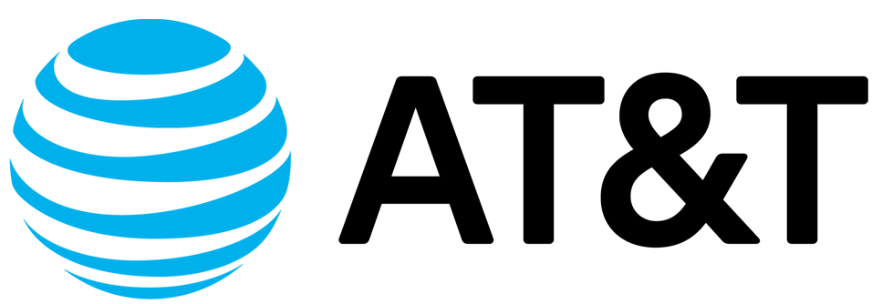
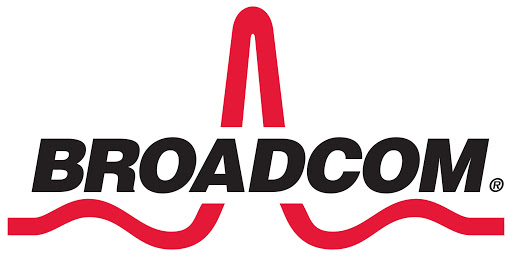
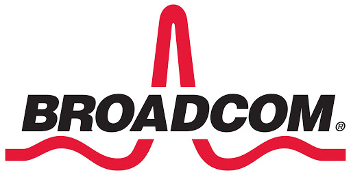

|
Aaron Ding, PhD Assistant Professor, TU Delft Adjunct Professor, University of Helsinki Cyber-Physical Intelligence (CPI) Lab Email: Aaron.Ding (at) tudelft.nl Address: P.O. Box 5015, ESS, TU Delft Jaffalaan 5, 2600GA Delft, Netherlands |
{kind=link}
| Home | Publications | Projects | Education | Group | Services | Software | Misc |
Software Highlight
"Good software, like wine, takes time." -- Joel Spolsky Software and system implementations are key part of my research. Besides delivering the contributions via scientific publications, CPI Lab always release, if permitted, our work as open-source software. Here I list the implementations that are completed through CPI projects. The source codes can be forked from corresponding GitHub repositories. Links to SoftOffload | MADNet | NAO | more CPI implementations
SoftOffload
Overview
 

Homepage
Team
- Aaron Ding - TU Delft / Helsinki
- Yanhe Liu - Sina / Helsinki
- Hannu Flinck - Nokia Bell Labs
- Sasu Tarkoma - Helsinki
- Henning Schulzrinne - Columbia
- Jon Crowcroft - Cambridge
Source Code
MADNet
Overview
 

Publications
- "Energy Awareness in Mobile Traffic Offloading"
Aaron Yi Ding, Jon Crowcroft
Cambridge University Press: Smartphone Energy Consumption: Modelling and Optimization, 2014. -
"Enabling Energy-Aware Collaborative Mobile Data Offloading for Smartphones"
Aaron Yi Ding, Bo Han, Yu Xiao, Pan Hui, Aravind Srinivasan, Markku Kojo, Sasu Tarkoma
IEEE SECON, New Orleans, USA, June 2013. -
"Collaborative Communication and Sensing for Mobile Systems"
Aaron Yi Ding, Jon Crowcroft, Sasu Tarkoma
ACM SenSys Doctoral Colloquium, Rome, Italy, November 2013. -
"Enable Energy-Aware Mobile Data Offloading for Smartphones through Vertical Collaboration"
Aaron Yi Ding, Pan Hui, Markku Kojo, Sasu Tarkoma
ACM CoNEXT PhD Student Workshop, Nice, France, December 2012. (32 accepted out of 62 submissions) -
"Enabling Energy-aware and Collaborative Management of Data Traffic for Mobile Systems"
Aaron Yi Ding, Markku Kojo, Sasu Tarkoma
ACM EuroSys Doctoral Workshop, Bern, Switzerland, April 2012.
Team
- Aaron Ding - TU Delft / Helsinki
- Yu Xiao - Aalto
- Bo Han - AT&T Research / UMD
- Pan Hui - Deutsche Telekom Labs
- Sasu Tarkoma - Helsinki
Source Code
NAO
Overview
 

Publications
-
"Toward Network Controlled IP Traffic Offloading"
Jouni Korhonen, Teemu Savolainen, Aaron Yi Ding, Markku Kojo
IEEE Communications Magazine (IEEE COMMAG), Volume 51, Issue 3, p.96 - 102, 2013. -
"Controlling Traffic Offloading Using Neighbor Discovery Protocol"
Jouni Korhonen, Teemu Savolainen, Aaron Yi Ding
IETF Internet Draft, 2012. -
"NAO: A Framework to Enable Efficient Mobile Offloading"
Aaron Yi Ding, Jouni Korhonen, Pan Hui, Teemu Savolainen, Sasu Tarkoma, Markku Kojo
ACM Middleware PDT Workshop, Lisbon, Portugal, December 2011. -
Aaron Yi Ding, Jouni Korhonen, Teemu Savolainen, "Controlling Traffic Offloading Using Neighbor Discovery Protocol", In Proceedings of IETF-83, Internet Area, France, 2012.
» Presentation at IETF, Paris. -
Aaron Yi Ding, Jouni Korhonen, Teemu Savolainen, "Controlling Traffic Offloading Using Neighbor Discovery Protocol", In Proceedings of IETF-82, Internet Area, 2011.
» Presentation at IETF, Taipei.
Team
- Aaron Ding - TU Delft / Helsinki
- Jouni Korhonen - Broadcom
- Teemu Savolainen - Nokia
- Peng Liu - Aalto
- Yonghao Li - Helsinki
- Markku Kojo - Helsinki
- Sasu Tarkoma - Helsinki
Source Code
- Linux kernel extensions and P-GW/GGSN module - classified under industrial partner agreement.
CPI Implementations
IoT Resource-aware Orchestration Framework for Edge Computing: Linux netlink patch for IPv6 address label manipulation: ns-2 modules for EAP fast authentication: Virtualization-based Platform Migration for On-Demand VoIP Services